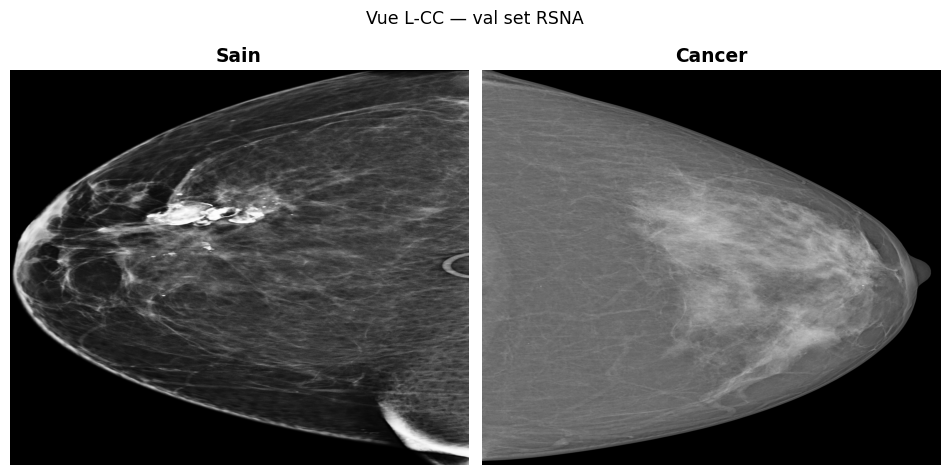
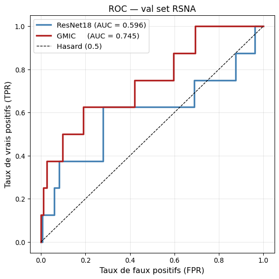
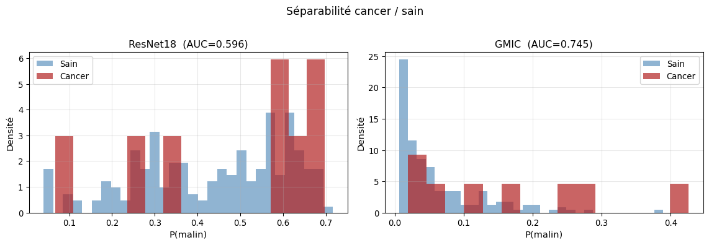
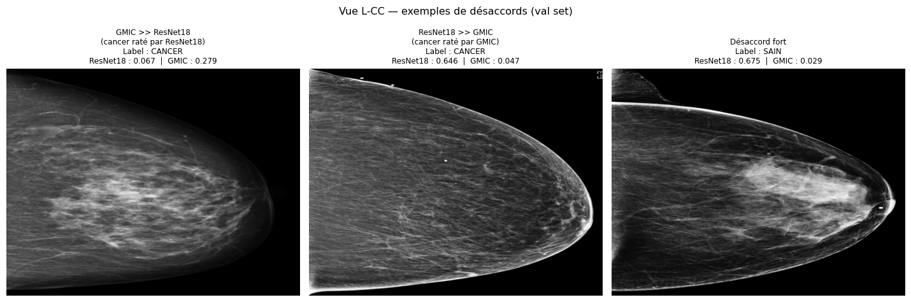

Device : cudaResNet18 from scratch vs GMIC — Comparaison sur le val set RSNA
Même 190 examens : backbone générique entraîné de zéro vs architecture spécialisée mammographie
Intro
Ce notebook compare deux approches de détection de cancer du sein sur exactement le même jeu de validation — les ~190 examens RSNA réservés lors de l’entraînement.
| ResNet18 | GMIC | |
|---|---|---|
| Niveau | Image (1 vue = 1 prédiction) | Image (1 vue = 1 prédiction, agrégé par exam) |
| Pré-entraînement | Aucun — poids initialisés aléatoirement (weights=None) |
Mammographies NYU (~230 k images) |
| Architecture | Backbone générique + Linear(512,1) | ResNetV2 + saliency + K patches + attention |
| Entraîné ici ? | Oui — fine_tuning/train_resnet.py |
Non — poids NYU pré-chargés |
Aucun entraînement n’a lieu dans ce notebook. On charge les résultats déjà calculés pour ResNet18, on lance l’inférence GMIC sur le val set, puis on compare les deux courbes ROC.
Partie I — Le val set RSNA
Code
_, val_exams = load_and_split(EXAM_LIST_PATH)
n_cancer = sum(1 for e in val_exams if e["cancer_label"]["malignant"] == 1)
n_sain = len(val_exams) - n_cancer
exam_labels = [int(e["cancer_label"]["malignant"]) for e in val_exams]
print(f"Val set : {len(val_exams)} exams | cancer={n_cancer} sain={n_sain}")
print(f"Taux de cancer : {100*n_cancer/len(val_exams):.1f} %")Train : 761 exams | cancer=30 sain=731
Val : 191 exams | cancer=8 sain=183
Val set : 191 exams | cancer=8 sain=183
Taux de cancer : 4.2 %Le val set est obtenu avec le même RANDOM_SEED=42 que l’entraînement : les examens sont identiques quoi qu’il arrive.
Exemples visuels du val set
Code
def _first_lccc(exam):
"""Retourne le chemin PNG de la vue L-CC d'un exam, ou None."""
for rel in exam.get("L-CC", []):
p = os.path.join(IMAGE_DIR, rel + ".png")
if os.path.exists(p):
return p
return None
cancer_exs = [e for e in val_exams if e["cancer_label"]["malignant"] == 1]
sain_exs = [e for e in val_exams if e["cancer_label"]["malignant"] == 0]
# Cherche le premier exam avec une L-CC disponible
cancer_img = next((p for e in cancer_exs if (p := _first_lccc(e))), None)
sain_img = next((p for e in sain_exs if (p := _first_lccc(e))), None)
if cancer_img and sain_img:
fig, axes = plt.subplots(1, 2, figsize=(10, 5))
for ax, path, title in zip(axes, [sain_img, cancer_img], ["Sain", "Cancer"]):
img = imageio.imread(path)
ax.imshow(img, cmap="gray", aspect="auto")
ax.set_title(title, fontsize=14, weight="bold")
ax.axis("off")
fig.suptitle("Vue L-CC — val set RSNA", fontsize=13)
plt.tight_layout()
plt.show()
else:
print("Images de démonstration non disponibles.")
Partie II — Modèle 1 : ResNet18
Architecture en bref
ResNet18 est un backbone générique conçu pour la reconnaissance d’objets naturels.
Comment on l’adapte à la mammographie :
- Image-level — chaque vue (L-CC, L-MLO, R-CC, R-MLO) est traitée comme un échantillon indépendant. Un exam produit jusqu’à 4 prédictions, qu’on moyenne en sortie.
- Grayscale → RGB — les images mammographiques en niveaux de gris sont dupliquées sur 3 canaux pour rentrer dans le ResNet standard.
- Resize 512×512 — redimensionnement anisotrope (pas de crop) pour ne pas perdre de tissu périphérique.
- Head binaire —
model.fc = nn.Linear(512, 1). Une seule sortie,BCEWithLogitsLoss. - WeightedRandomSampler — le déséquilibre 24:1 (sain:cancer) est compensé par un échantillonnage 50/50 à chaque batch.
# L'essentiel du code — ResNet18 from scratch (aucun pré-entraînement)
model = torchvision.models.resnet18(weights=None) # poids initialisés aléatoirement
model.fc = nn.Linear(model.fc.in_features, 1) # remplace la tête 1000-classesChargement du meilleur checkpoint
Code
# Ordre de priorité :
# 1. runs/*scratch*/best.pt (run isolation, from-scratch)
# 2. resnet18_best.pt (ancien format, avant run isolation — aussi from-scratch)
# 3. runs/*/best.pt (fallback, peut être pretrained)
scratch_runs = sorted(glob.glob(str(CKPT_DIR / "runs" / "*scratch*" / "best.pt")))
legacy_ckpt = CKPT_DIR / "resnet18_best.pt"
all_runs = sorted(glob.glob(str(CKPT_DIR / "runs" / "*" / "best.pt")))
if scratch_runs:
ckpt_path = scratch_runs[-1]
is_legacy = False
elif legacy_ckpt.exists():
ckpt_path = str(legacy_ckpt)
is_legacy = True
elif all_runs:
ckpt_path = all_runs[-1]
is_legacy = False
print("⚠️ Aucun run 'scratch' trouvé — utilisation du run le plus récent.")
print(" Pour un run from-scratch : python -m fine_tuning.train_resnet")
else:
raise FileNotFoundError(
"Aucun checkpoint trouvé.\n"
"Lance d'abord : python -m fine_tuning.train_resnet"
)
ckpt = torch.load(ckpt_path, map_location="cpu", weights_only=False)
val_preds_img = ckpt["val_preds"]
val_auc_resnet = ckpt["val_auc"]
best_epoch = ckpt["epoch"]
if is_legacy:
pretrained = False
args = {}
print("Checkpoint : resnet18_best.pt (ancien format, from scratch)")
else:
args_path = Path(ckpt_path).parent / "args.json"
args = json.loads(args_path.read_text()) if args_path.exists() else {}
pretrained = args.get("pretrained", False)
if pretrained:
print("⚠️ Ce checkpoint utilise les poids ImageNet (--pretrained).")
print(" La comparaison sera moins franche qu'avec weights=None.")
print(f"Checkpoint : {Path(ckpt_path).parent.name}")
print(f"Meilleur epoch : {best_epoch} | AUC image-level : {val_auc_resnet:.4f}")
print(f"From scratch : {not pretrained} | Nombre de prédictions (images) : {len(val_preds_img)}")Checkpoint : resnet18_best.pt (ancien format, from scratch)
Meilleur epoch : 2 | AUC image-level : 0.6016
From scratch : True | Nombre de prédictions (images) : 878Agrégation image → exam
Code
# Reconstruit l'ordre des entrées val (identique au DataLoader shuffle=False)
val_entries = _make_entries(val_exams)
assert len(val_entries) == len(val_preds_img), (
f"Désaccord : {len(val_entries)} entrées vs {len(val_preds_img)} prédictions. "
"Le checkpoint ne correspond peut-être pas au split actuel."
)
idx = 0
resnet_exam_scores = []
for exam in val_exams:
n_views = sum(
1 for v in VIEWS
for r in exam.get(v, [])
if os.path.exists(os.path.join(IMAGE_DIR, r + ".png"))
)
view_preds = val_preds_img[idx: idx + n_views]
resnet_exam_scores.append(float(np.mean(view_preds)) if view_preds else 0.5)
idx += n_views
resnet_exam_scores = np.array(resnet_exam_scores)
auc_resnet_exam = roc_auc_score(exam_labels, resnet_exam_scores)
print(f"AUC ResNet18 (niveau exam) : {auc_resnet_exam:.4f}")AUC ResNet18 (niveau exam) : 0.5963Partie III — Modèle 2 : GMIC
Architecture en bref
GMIC (Globally-aware Multiple Instance Classifier, Shen et al. 2020) est une architecture spécialisée mammographie développée par NYU.
Ce qui le distingue de ResNet18 :
- Pré-entraînement domaine — les poids NYU ont été appris sur ~230 000 mammographies. Le backbone connaît déjà les textures tissulaires avant même de voir vos données.
- Pipeline en 6 étages — GlobalNet → saliency map → sélection gloutonne de K=6 ROI → LocalNet sur chaque patch → Gated Attention → Fusion.
- Résolution native — contrairement à ResNet18, GMIC accepte les images full-resolution (2944×1920) : le GlobalNet travaille à basse résolution (46×30 CAM), le LocalNet zoome sur les 6 zones les plus suspectes.
- Attention interprétable — les poids α_k (somme = 1 sur les K patches) indiquent quelles zones ont guidé la décision.
- Poids chargés via remapping — 258 clés NYU sont renommées pour correspondre à notre
ScratchGMIC(cf.scripts/gmic_from_scratch.py).
# L'essentiel du code — GMIC "from scratch" (nn.Module standard)
from scripts.gmic_from_scratch import ScratchGMIC, load_nyu_weights
model_gmic = ScratchGMIC(K=6, crop_shape=(256,256), cam_size=(46,30), num_classes=2)
load_nyu_weights(model_gmic, "GMIC/models/sample_model_1.p", device=device)
# → y_fusion = model_gmic(x) # x : (1,1,H,W) — une vue à la foisInférence sur le val set
Code
from scripts.gmic_from_scratch import ScratchGMIC, load_nyu_weights
model_gmic = ScratchGMIC(
K=6, crop_shape=(256, 256), cam_size=(46, 30),
percent_t=0.02, num_classes=2,
device_type="gpu" if DEVICE.type == "cuda" else "cpu",
gpu_number=0,
).to(DEVICE).eval()
load_nyu_weights(model_gmic, str(NYU_CKPT), device=DEVICE)
# Cache : évite de relancer ~764 forward passes (~20 min) à chaque rendu.
GMIC_CACHE = CKPT_DIR / "gmic_val_scores.json"
if GMIC_CACHE.exists():
cache = json.loads(GMIC_CACHE.read_text())
gmic_exam_scores = np.array(cache["scores"])
print(f"Scores GMIC chargés depuis le cache ({GMIC_CACHE.name})")
else:
gmic_exam_scores = []
for exam in tqdm(val_exams, desc="GMIC inférence", unit="exam"):
view_scores = []
for view in VIEWS:
for rel in exam.get(view, []):
path = os.path.join(IMAGE_DIR, rel + ".png")
if not os.path.exists(path):
continue
img = imageio.imread(path).astype(np.float32)
img = (img - img.mean()) / max(img.std(), 1e-5)
x = torch.tensor(img[None, None]).to(DEVICE)
with torch.no_grad():
y = model_gmic(x)
view_scores.append(y[0, 1].item()) # P(malin)
gmic_exam_scores.append(float(np.mean(view_scores)) if view_scores else 0.5)
gmic_exam_scores = np.array(gmic_exam_scores)
GMIC_CACHE.write_text(json.dumps({"scores": gmic_exam_scores.tolist()}, indent=2))
print(f"Scores GMIC sauvegardés → {GMIC_CACHE.name}")
auc_gmic_exam = roc_auc_score(exam_labels, gmic_exam_scores)
print(f"AUC GMIC (niveau exam) : {auc_gmic_exam:.4f}")Chargé : 258 clés remappées depuis sample_model_1.p
ignorées (non utilisées par GMIC) : 1
manquantes (attendues mais absentes) : 0
inattendues (présentes mais non utilisées) : 0
Scores GMIC chargés depuis le cache (gmic_val_scores.json)
AUC GMIC (niveau exam) : 0.7452Partie IV — Comparaison
Tableau récapitulatif
| Modèle | Pré-entraînement | Niveau inférence | AUC val (exam) | Exams val | Cancer val | |
|---|---|---|---|---|---|---|
| 0 | ResNet18 | From scratch (weights=None) | Image → agrégé exam | 0.5963 | 191 | 8 |
| 1 | GMIC | NYU Mammographies | Image → agrégé exam | 0.7452 | 191 | 8 |
Courbes ROC superposées
Code
fpr_r, tpr_r, _ = roc_curve(exam_labels, resnet_exam_scores)
fpr_g, tpr_g, _ = roc_curve(exam_labels, gmic_exam_scores)
fig, ax = plt.subplots(figsize=(6, 6))
ax.plot(fpr_r, tpr_r, color="steelblue", lw=2.5,
label=f"ResNet18 (AUC = {auc_resnet_exam:.3f})")
ax.plot(fpr_g, tpr_g, color="firebrick", lw=2.5,
label=f"GMIC (AUC = {auc_gmic_exam:.3f})")
ax.plot([0, 1], [0, 1], "k--", lw=1, label="Hasard (0.5)")
ax.set_xlabel("Taux de faux positifs (FPR)", fontsize=12)
ax.set_ylabel("Taux de vrais positifs (TPR)", fontsize=12)
ax.set_title("ROC — val set RSNA", fontsize=13)
ax.legend(fontsize=11)
ax.grid(alpha=0.3)
plt.tight_layout()
plt.show()
Distributions des scores P(malin)
Code
labels_arr = np.array(exam_labels)
fig, axes = plt.subplots(1, 2, figsize=(12, 4), sharey=False)
for ax, scores, title in zip(
axes,
[resnet_exam_scores, gmic_exam_scores],
[f"ResNet18 (AUC={auc_resnet_exam:.3f})", f"GMIC (AUC={auc_gmic_exam:.3f})"],
):
ax.hist(scores[labels_arr == 0], bins=30, alpha=0.6,
color="steelblue", label="Sain", density=True)
ax.hist(scores[labels_arr == 1], bins=15, alpha=0.7,
color="firebrick", label="Cancer", density=True)
ax.set_xlabel("P(malin)", fontsize=11)
ax.set_ylabel("Densité", fontsize=11)
ax.set_title(title, fontsize=12)
ax.legend(fontsize=10)
ax.grid(alpha=0.3)
plt.suptitle("Séparabilité cancer / sain", fontsize=13, y=1.02)
plt.tight_layout()
plt.show()
Un bon modèle sépare les deux distributions — les cancer à droite (scores élevés), les sains à gauche (scores faibles).
Cas intéressants : désaccords entre les deux modèles
Code
# Écart de score entre GMIC et ResNet18 pour chaque exam cancer
diff = gmic_exam_scores - resnet_exam_scores
cancer_idx = [i for i, l in enumerate(exam_labels) if l == 1]
if len(cancer_idx) >= 3:
# GMIC >> ResNet18 (GMIC le meilleur)
gmic_wins = sorted(cancer_idx, key=lambda i: -diff[i])[:1]
# ResNet18 >> GMIC (ResNet18 le meilleur)
resnet_wins = sorted(cancer_idx, key=lambda i: diff[i])[:1]
# Désaccord maximal (abs), peu importe la direction
all_idx = sorted(range(len(val_exams)), key=lambda i: -abs(diff[i]))
big_disagree = [i for i in all_idx
if i not in gmic_wins and i not in resnet_wins][:1]
cases = (
[(i, "GMIC >> ResNet18\n(cancer raté par ResNet18)") for i in gmic_wins]
+ [(i, "ResNet18 >> GMIC\n(cancer raté par GMIC)") for i in resnet_wins]
+ [(i, "Désaccord fort") for i in big_disagree]
)
fig, axes = plt.subplots(1, len(cases), figsize=(5 * len(cases), 5))
if len(cases) == 1:
axes = [axes]
for ax, (idx, caption) in zip(axes, cases):
exam = val_exams[idx]
img_path = _first_lccc(exam)
if img_path:
ax.imshow(imageio.imread(img_path), cmap="gray", aspect="auto")
else:
ax.text(0.5, 0.5, "Image\nindisponible",
ha="center", va="center", transform=ax.transAxes)
lbl = "CANCER" if exam_labels[idx] == 1 else "SAIN"
ax.set_title(
f"{caption}\n"
f"Label : {lbl}\n"
f"ResNet18 : {resnet_exam_scores[idx]:.3f} | GMIC : {gmic_exam_scores[idx]:.3f}",
fontsize=9,
)
ax.axis("off")
plt.suptitle("Vue L-CC — exemples de désaccords (val set)", fontsize=12)
plt.tight_layout()
plt.show()
else:
print(f"Trop peu de cas cancer dans le val set ({len(cancer_idx)}) pour afficher 3 exemples.")
Partie V — Conclusion
AUC ResNet18 : 0.5963
AUC GMIC : 0.7452
Écart : +0.1489 → GMIC gagnePourquoi GMIC fait (généralement) mieux
Pré-entraînement domaine — c’est le facteur principal. Le backbone GMIC a été optimisé sur des centaines de milliers de mammographies NYU. Il reconnaît les microcalcifications, les masses, les asymétries de densité. ResNet18 ImageNet connaît des chats et des bus ; le transfert vers les niveaux de gris mammographiques est partiel.
Architecture spécialisée — la saliency map + sélection des K=6 patches permet à GMIC de zoomer sur les zones suspectes à résolution native (256×256 patches extraits d’une image 2944×1920). ResNet18 voit une image 512×512 compressée.
Ce qu’il faudrait pour que ResNet18 soit compétitif
- Plus de données — avec 5 000+ cas cancer en train, ResNet18 from-scratch ou fine-tuné ImageNet approche GMIC. C’est la conclusion principale de l’article GMIC.
- Pré-entraînement radiologique — RadImageNet (ResNet50 entraîné sur 1.35 M images radio) serait plus proche que ImageNet, sans nécessiter l’architecture GMIC.
- Architecture multi-instance — adopter la logique MIL de GMIC (K patches + attention) sur un backbone ResNet serait un compromis intéressant.
Pour aller plus loin
| Notebook | Contenu |
|---|---|
| resnet18_training.qmd | Courbes d’entraînement ResNet18 détaillées |
| pipeline_showcase_gmic.qmd | GMIC pas à pas sur une image (saliency, patches, attention) |
| pipeline_scratch_gmic.qmd | GMIC reconstruit en nn.Module standards — remapping des clés NYU |